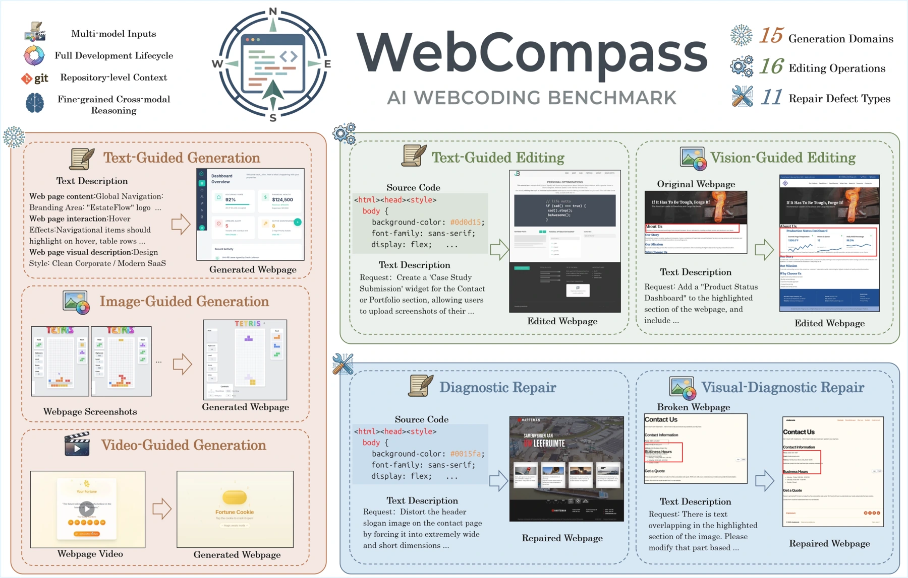
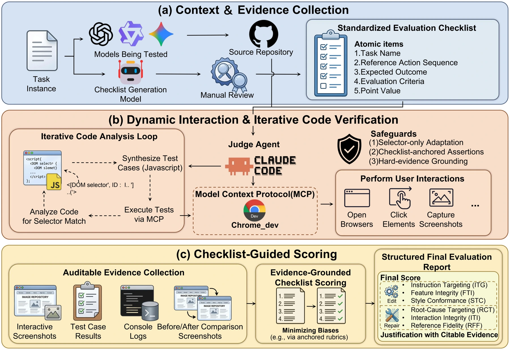

A generated website can contain valid code while failing to look right or respond correctly. Web engineering also includes editing and repair, so one-shot generation tests capture only part of an agent’s work.
生成的网站可能代码正确，却在视觉或交互上不符合要求。网页工程还涉及修改与修复，因此单次生成测试只能衡量智能体工作的一部分。
WebCompass starts from that practical distinction. It asks whether an agent can produce a working experience, and then change or repair it as the task evolves.
WebCompass 从这一实际区别出发，考察智能体能否构建可用体验，并随任务变化完成修改与修复。
Evaluating the whole development lifecycle评测完整的开发生命周期
WebCompass combines text, image, and video inputs with generation, editing, and repair tasks across seven categories. Its generation evaluator operates websites in a real browser, explores interactions, and creates targeted tests. Editing and repair use checklist-guided evaluation. The benchmark is designed around the iterative lifecycle of a website rather than a single static output.
WebCompass 将文字、图像和视频输入与生成、编辑、修复任务结合，形成七种任务类别。生成任务的评估器在真实浏览器中操作网站、探索交互并构造针对性测试；编辑和修复任务采用检查清单引导的评估。基准围绕网站的迭代生命周期设计。
Generation asks whether a new application works; editing asks whether a requested change preserves the rest of the application; repair asks whether the underlying defect is corrected without breaking interactions. These are different engineering behaviors. Browser execution lets the evaluator inspect states reached by real actions, rather than infer functionality from screenshots alone. Checklists then make the intended change explicit when judging editing and repair.
生成关注新应用能否工作，编辑关注修改是否保留其他功能，修复则关注根因是否解决且未破坏交互。这三者检验不同工程行为。浏览器执行让评估器检查真实操作到达的状态，而非仅从截图推断功能；检查清单则明确编辑和修复任务所要求的变化。
{kind=link}

Looking beyond a screenshot不止查看静态截图
Ten multimodal models are evaluated using Claude Code 2.0.67 and browser inspection through Chrome DevTools MCP. Generation, editing and repair each have three dimensions: a website’s ability to run, adherence to requirements and visual quality are not collapsed into a single pass/fail test. The overall score averages nine dimensions, while additional analyses examine difficulty, framework choice and thinking mode.
实验使用 Claude Code 2.0.67 与 Chrome DevTools MCP，对十个多模态模型进行浏览器内评估。生成、编辑、修复各包含三个维度，将可运行性、需求遵循与视觉质量分开衡量。总分为九个维度的平均值，并进一步分析任务难度、框架选择和思考模式的影响。
Where current coding agents struggle当前编程智能体的困难
The evaluation finds stronger and more balanced performance from the tested closed-source models, while aesthetics remains a persistent weakness, especially for open-source models. Editing and repair reveal different difficulty profiles, and framework choice affects results. The practical implication is to assess visual fidelity, interaction, and implementation together; a single correctness score can conceal important failure modes.
在评测中，闭源模型表现更强且更均衡；美观性仍是持续的瓶颈，尤其对于开源模型。编辑与修复具有不同的难度特点，框架选择也会影响结果。因此，应同时考察视觉还原、交互与实现质量，单一的正确率可能掩盖重要问题。
{kind=link}

A working website is more than valid code网站可用不等于代码有效
A web-coding model should be judged on the experience it produces, including what happens after the initial page appears. The benchmark makes that broader target explicit. Its scores still depend on automated judges and the chosen runtime, so dimension-level results are more informative than treating one aggregate ranking as a complete measure of engineering ability.
网页编程模型的评价对象应包含最终用户体验，以及首屏出现之后的交互表现。该基准将这一更完整的目标明确化。不过，分数仍依赖自动评审与运行环境，因此逐维度结果比单一总榜更能说明工程能力。
Paper & authors论文与作者
WebCompass: Towards Multimodal Web Coding Evaluation for Code Language Models ↗
Cite this work
@misc{lei2026webcompassmultimodalwebcoding,
title = {WebCompass: Towards Multimodal Web Coding Evaluation for Code Language Models},
author = {Xinping Lei
and Xinyu Che
and Junqi Xiong
and Chenchen Zhang
and Yukai Huang
and Chenyu Zhou
and Haoyang Huang
and Minghao Liu
and Letian Zhu
and Hongyi Ye
and Jinhua Hao
and Ken Deng
and Zizheng Zhan
and Han Li
and Dailin Li
and Yifan Yao
and Ming Sun
and Zhaoxiang Zhang
and Jiaheng Liu},
year = {2026},
eprint = {2604.18224},
archivePrefix = {arXiv},
primaryClass = {cs.SE},
url = {https://arxiv.org/abs/2604.18224}
}